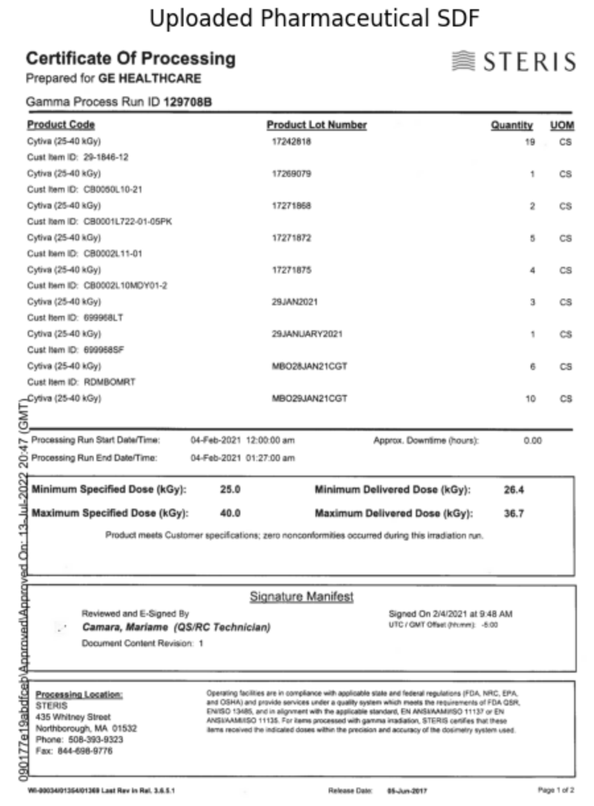
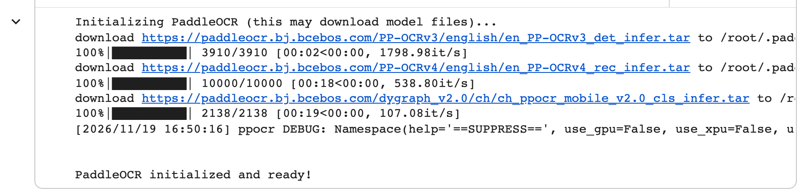
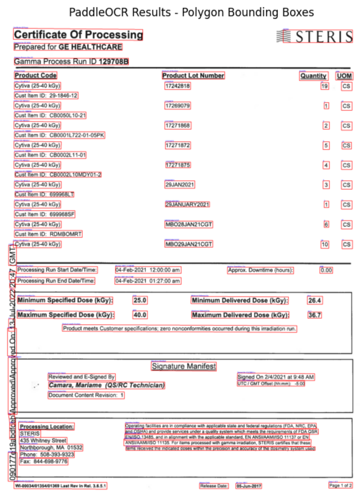
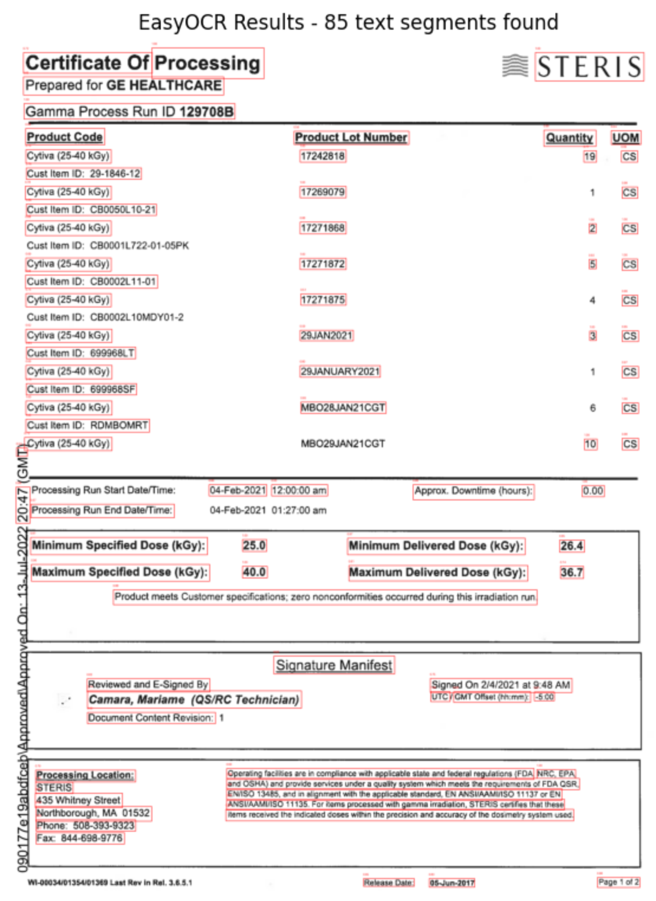
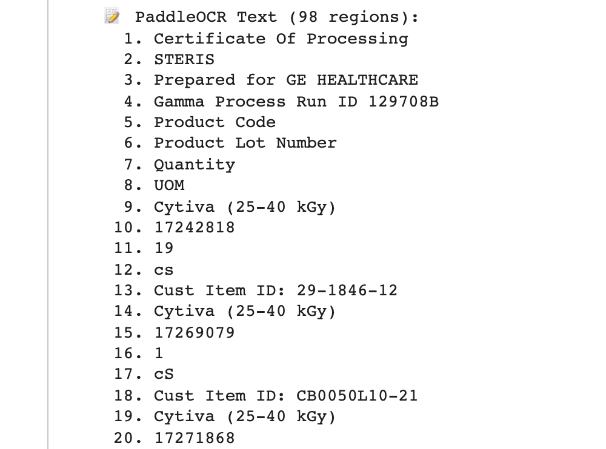

You'll read the same page as in the Tesseract reading, Page 4, the Certificate of Processing. Download it to your computer, because STEP 3 asks you to upload it.
You won't need any new files, and we've already got a Colab notebook ready to go:
pharmaceutical-sdf-page4-certificate-processing.pdf.# STEP 1, and the next slides take you through them one by one.Let's start with PaddleOCR first, then move on to EasyOCR further down.
Step-by-Step: PaddleOCR in Action
Install the libraries
Let's start with PaddleOCR. It's more powerful, slightly more setup, but really good at layout-heavy docs like pharmaceutical certificates.
Press Run on the cell that starts with # STEP 1:
# ============================================
# STEP 1: Install PaddleOCR and All Dependencies
# ============================================
#
# WHAT WE'RE DOING:
# Installing PaddleOCR, PaddlePaddle (its deep learning framework),
# and helper libraries for PDF processing.
#
# WHY THIS MATTERS:
# PaddleOCR needs several tools to work:
# - PaddlePaddle: The engine that powers PaddleOCR (like a car engine)
# - pdf2image + poppler: Convert PDF pages into images
# - langchain: Required by PaddleOCR's internal components
#
# WHAT YOU'LL SEE:
# Lots of installation output - this may take a minute or two.
# You may see some warning messages in red - that's normal!
#
# ⚠️ IMPORTANT: After this cell finishes, go to
# Runtime → Restart session, then SKIP this cell
# and continue from the NEXT cell.
# ============================================
# Install PaddleOCR and a compatible version of PaddlePaddle
# We pin specific versions to avoid compatibility issues
!pip install paddleocr==2.10.0 paddlepaddle==3.0.0
# Install PDF conversion tools and langchain (needed by PaddleOCR internals)
!pip install pdf2image langchain langchain-text-splitters
# Install poppler (system tool that helps convert PDFs to images)
!apt-get install poppler-utils -y
print("\n" + "=" * 50)
print("All dependencies installed!")
print("=" * 50)
print("\n⚠️ NOW: Go to Runtime → Restart session")
print("Then SKIP this cell and run the next one.")What this code does:
!pip install installs PaddleOCR, its engine PaddlePaddle and pdf2image, and !apt-get install installs Poppler. The numbers after == pick exact versions, so the code in this reading keeps working when newer versions come out.What you'll see in Colab:
Setting up poppler-utils (24.02.0-1ubuntu9.11) ...
Processing triggers for man-db (2.12.0-4build2) ...
==================================================
All dependencies installed!
==================================================
⚠️ NOW: Go to Runtime → Restart session
Then SKIP this cell and run the next one.The output is long. These are its last lines.
The last two lines tell you to restart the session and then skip this cell. In your copy, you don't need the restart: the versions it installs work straight away. In a new session, run STEP 1 once and ignore its restart message. Don't restart after that.
The next cell, STEP 1.5, is a fix cell. PaddleOCR used to import from an older version of a library called langchain, and that cell bridges the gap. In your copy, PaddleOCR loads even without it, but run it anyway.
Press Run on the cell that starts with # STEP 1.5, the cell under STEP 1:
# ============================================
# STEP 1.5: Fix a Known Compatibility Issue
# ============================================
#
# WHAT WE'RE DOING:
# Applying a small fix so PaddleOCR works with the latest
# version of a library called "langchain" that's pre-installed
# in Google Colab.
#
# WHY THIS MATTERS:
# PaddleOCR tries to import from an older version of langchain,
# but Colab has a newer version installed. This fix bridges that gap.
# Without it, you'd get an error when trying to import PaddleOCR.
#
# WHAT YOU'LL SEE:
# A simple confirmation message. No errors = success!
#
# Reference: https://github.com/PaddlePaddle/PaddleOCR/issues/16711
# ============================================
import sys
import types
# Create compatibility bridges for old import paths
# Bridge 1: langchain.docstore.document → langchain_core.documents
m1 = types.ModuleType("langchain.docstore.document")
from langchain_core.documents import Document
m1.Document = Document
sys.modules["langchain.docstore.document"] = m1
# Bridge 2: langchain.text_splitter → langchain_text_splitters
m2 = types.ModuleType("langchain.text_splitter")
from langchain_text_splitters import RecursiveCharacterTextSplitter
m2.RecursiveCharacterTextSplitter = RecursiveCharacterTextSplitter
sys.modules["langchain.text_splitter"] = m2
print("Compatibility fix applied successfully!")
# TIP: This fix is needed as of early 2026. Future versions of
# PaddleOCR may not need it. If you get an error here, make sure
# you ran the install cell first and restarted the runtime.It prints Compatibility fix applied successfully!
Set up your imports
Press Run on the cell that starts with # STEP 2:
# ============================================
# STEP 2: Import Libraries
# ============================================
#
# WHAT WE'RE DOING:
# Loading all the tools we need for PaddleOCR.
#
# WHY THIS MATTERS:
# Each library has a specific purpose:
# - PaddleOCR: The main OCR engine
# - pdf2image: Converts PDF pages to images
# - PIL: For displaying and drawing on images
# - matplotlib: For showing results nicely
# - cv2/numpy: For image processing
#
# WHAT YOU'LL SEE:
# A success message if everything loaded correctly.
# ============================================
from paddleocr import PaddleOCR
from pdf2image import convert_from_path
from PIL import Image, ImageDraw
import matplotlib.pyplot as plt
import cv2
import numpy as np
from google.colab import files
import os
print("All libraries imported successfully!")What each library does:
PaddleOCR: The main OCR enginepdf2image: Converts PDF pages to imagesmatplotlib: For showing results nicelyYou already know PIL, cv2 (OpenCV) and NumPy from earlier readings.
What you'll see in Colab:
/usr/local/lib/python3.13/dist-packages/paddle/utils/cpp_extension/extension_utils.py:711: UserWarning: No ccache found. Please be aware that recompiling all source files may be required. You can download and install ccache from: https://github.com/ccache/ccache/blob/master/doc/INSTALL.md
warnings.warn(warning_message)
All libraries imported successfully!The UserWarning about ccache is about rebuilding PaddlePaddle's own code, which you won't do. You can ignore it. The last line says the imports worked.
The cell under STEP 2 has no title. It loads some of the same tools again and prints nothing. Run it or skip it, either works:
from google.colab import files
import os
from PIL import Image, ImageDraw
import matplotlib.pyplot as plt
import cv2
import numpy as npUpload and convert the PDF to image
Just like Tesseract, PaddleOCR works on images as well, so let's turn the first page of your PDF into a clean image.
Press Run on the # STEP 3 cell. Click Choose Files under it and pick pharmaceutical-sdf-page4-certificate-processing.pdf:
# ============================================
# STEP 3: Upload Your Pharmaceutical SDF
# ============================================
#
# WHAT WE'RE DOING:
# Uploading and converting the PDF to an image.
#
# WHY THIS MATTERS:
# Like Tesseract, PaddleOCR works on images.
# We'll convert at 300 DPI for high-quality text recognition.
#
# WHAT YOU'LL SEE:
# A preview of your uploaded pharmaceutical document.
# ============================================
print("Upload your Pharmaceutical SDF (PDF file):")
uploaded = files.upload()
# Get the uploaded filename
pdf_filename = list(uploaded.keys())[0]
pdf_path = f"/content/{pdf_filename}"
print(f"\nUploaded: {pdf_filename}")
# Convert PDF to images (high quality)
print("\nConverting PDF to image...")
images = convert_from_path(pdf_path, dpi=300)
print(f"Converted {len(images)} page(s)")
# Save the first page as an image
image = images[0]
image_path = '/content/pharmaceutical_sdf.png'
image.save(image_path, 'PNG')
# Display the image
plt.figure(figsize=(12, 8))
plt.imshow(image)
plt.title('Uploaded Pharmaceutical SDF')
plt.axis('off')
plt.show()convert_from_path() from pdf2image does what get_pixmap() did in the Tesseract reading: it turns each page into a picture, here at 300 dpi. We'll only use the first page for now to keep it simple.
What you'll see in Colab:
Upload your Pharmaceutical SDF (PDF file):
pharmaceutical-sdf-page4-certificate-processing.pdf(application/pdf) - 617955 bytes, last modified: 11/19/2026 - 100% done
Saving pharmaceutical-sdf-page4-certificate-processing.pdf to pharmaceutical-sdf-page4-certificate-processing.pdf
Uploaded: pharmaceutical-sdf-page4-certificate-processing.pdf
Converting PDF to image...
Converted 1 page(s)Your line with the file size shows the day you upload it.
image_path now holds the name of the saved picture, and image holds the picture itself. PaddleOCR reads the file in STEP 5, EasyOCR reads it in STEP 10, and STEP 12 draws on a copy of image.

(opens the picture full size in a new tab)Click the picture to open it full size.
Run PaddleOCR on the image
Press Run on the cell that starts with # STEP 4:
# ============================================
# STEP 4: Initialize PaddleOCR
# ============================================
#
# WHAT WE'RE DOING:
# Setting up PaddleOCR with English language support.
#
# WHY THIS MATTERS:
# PaddleOCR needs to download model files the first time.
# The 'use_angle_cls=True' option helps detect rotated text.
#
# WHAT YOU'LL SEE:
# Download progress for model files, then a ready message.
# ============================================
print("Initializing PaddleOCR (this may download model files)...")
# Initialize PaddleOCR
ocr = PaddleOCR(
use_angle_cls=True, # Enable text angle detection
lang='en', # English language
rec_batch_num=1 # Read one line at a time (uses less memory)
)
print("\nPaddleOCR initialized and ready!")
# TIP: If you see warnings about GPU, that's okay - it will use CPU instead.What this code does:
use_angle_cls=True checks whether a line of text is upside down and turns it the right way up before reading it.rec_batch_num=1 makes PaddleOCR read one line at a time. That uses less memory, so Colab doesn't run out of memory later, when EasyOCR runs in the same notebook.The first time, STEP 4 downloads 3 model files, the files that hold what PaddleOCR learned about reading text. It takes under a minute. If you see warnings about GPU (a graphics chip that can make this faster; your notebook doesn't need one), that's okay.
What you'll see in Colab:

(opens the picture full size in a new tab)Colab cuts the long DEBUG line at the right edge. It lists PaddleOCR's settings, and you don't need to read it. The last line says PaddleOCR is ready.
ocr now holds PaddleOCR, ready to read English text.
After PaddleOCR reads your document, it gives you a list of what it found. For each word or phrase, it tells you:
A polygon is a shape joined from corner points. Here, each one has 4 corners.
Press Run on the cell that starts with # STEP 5:
# ============================================
# STEP 5: Run PaddleOCR on the Pharmaceutical SDF
# ============================================
#
# WHAT WE'RE DOING:
# Running OCR to extract text and bounding boxes.
#
# WHY THIS MATTERS:
# PaddleOCR returns detailed results:
# - The actual text detected
# - Confidence scores (how sure it is)
# - Polygon coordinates (4 corners of the text box)
#
# WHAT YOU'LL SEE:
# Progress messages as it processes the document.
# ============================================
print("Running PaddleOCR on your pharmaceutical document...")
print("(This may take a moment)")
# Run OCR
result = ocr.ocr(image_path)
print("\nOCR complete!")
print(f"Detected {len(result[0]) if result[0] else 0} text regions")
# TIP: result[0] contains all detected text regions from page 1Now print the first 15 things PaddleOCR found, so you can read them.
Press Run on the cell that starts with # STEP 6:
# ============================================
# STEP 6: Display Sample Results
# ============================================
#
# WHAT WE'RE DOING:
# Showing you what PaddleOCR found in a readable format.
#
# WHY THIS MATTERS:
# Before drawing boxes, let's see the raw output.
# Each result has: [polygon_box, (text, confidence)]
#
# WHAT YOU'LL SEE:
# A list of detected text with confidence scores.
# ============================================
print("Sample of PaddleOCR Results:")
print("=" * 60)
# Show first 15 results
for i, line in enumerate(result[0][:15]):
box = line[0] # Polygon coordinates
text = line[1][0] # Detected text
confidence = line[1][1] # Confidence score
print(f"{i+1:2d}. [{confidence:.2%}] {text}")
if len(result[0]) > 15:
print(f"\n... and {len(result[0]) - 15} more text regions!")
# TIP: Confidence scores above 90% are usually very reliable.Under STEP 5
Running PaddleOCR on your pharmaceutical document...
(This may take a moment)
[2026/11/19 16:50:21] ppocr DEBUG: dt_boxes num : 101, elapsed : 0.4056367874145508
[2026/11/19 16:50:21] ppocr DEBUG: cls num : 101, elapsed : 0.2753031253814697
[2026/11/19 16:50:33] ppocr DEBUG: rec_res num : 101, elapsed : 11.821258544921875
OCR complete!
Detected 98 text regionsThe DEBUG lines count 101 boxes. PaddleOCR leaves out the ones it is less than 50% sure of, so 98 are left. Your times will differ.
result now holds everything PaddleOCR found. result[0] is the list for the first page.
Under STEP 6
Sample of PaddleOCR Results:
============================================================ 1. [99.89%] Certificate Of Processing
2. [90.92%] STERIS
3. [99.93%] Prepared for GE HEALTHCARE
4. [98.71%] Gamma Process Run ID 129708B
5. [99.99%] Product Code
6. [99.53%] Product Lot Number
7. [99.96%] Quantity
8. [99.38%] UOM
9. [99.99%] Cytiva (25-40 kGy)
10. [99.49%] 17242818
11. [99.97%] 19
12. [65.15%] cs
13. [99.58%] Cust Item ID: 29-1846-12
14. [97.48%] Cytiva (25-40 kGy)
15. [99.99%] 17269079
... and 83 more text regions!Each line shows the confidence, then the text. Line 12 is cs at 65.15%: the page says CS in capitals, and PaddleOCR isn't sure.
Draw bounding boxes manually using OpenCV
Now you want to visually show where PaddleOCR found that text by drawing boxes on the image. So, how do you do that? You drew boxes with OpenCV in the Tesseract reading. This time, each box is a polygon.
What are all these steps doing? Let's break it down:
| Code line | What it does | Explanation |
|---|---|---|
img = cv2.imread(image_path) | Loads your image using OpenCV | Think of this like "opening" your PDF page (converted to an image) so you can draw on it. |
for line in result[0]: | Loops through OCR results | Goes through every word/phrase PaddleOCR found on the page. |
box = line[0], text = line[1][0], score = line[1][1] | Splits result into parts | box = where the text is (a polygon); text = what it says; score = how confident it is. |
box = [(int(x), int(y)) for x, y in box] | Cleans up box coordinates | Converts the box's corner points from decimals to whole numbers (needed for drawing). |
cv2.polylines(img, [np.array(box)], isClosed=True, color=(255, 0, 0), thickness=2) | Draws a box around text | Connects the corners to make a full shape around the text. Red box (the picture was turned to RGB first, so (255, 0, 0) is red). |
cv2.putText(img, text[:20], box[0], cv2.FONT_HERSHEY_SIMPLEX, 0.4, (0, 0, 255), 1) | Writes the text label on the image | Adds the first 20 characters of the text PaddleOCR saw near the top-left corner of the box, in blue font. |
Press Run on the cell that starts with # STEP 7:
# ============================================
# STEP 7: Draw Polygon Bounding Boxes
# ============================================
#
# WHAT WE'RE DOING:
# Drawing boxes around every text region PaddleOCR found.
#
# WHY THIS MATTERS:
# Unlike Tesseract's rectangles, PaddleOCR gives us polygons!
# Polygons can follow tilted or skewed text more precisely.
#
# WHAT YOU'LL SEE:
# Your document with red polygon boxes around all detected text.
# ============================================
# Load the original image with OpenCV
img = cv2.imread(image_path)
img = cv2.cvtColor(img, cv2.COLOR_BGR2RGB) # Convert to RGB for display
# Draw polygons for each detected text region
for line in result[0]:
box = line[0] # Get the polygon coordinates
text = line[1][0] # Get the text
score = line[1][1] # Get confidence
# Only draw for high-confidence detections
if score > 0.5:
# Convert box coordinates to integers
box = [(int(x), int(y)) for x, y in box]
# Draw the polygon (4-sided shape) in red
cv2.polylines(img, [np.array(box)], isClosed=True,
color=(255, 0, 0), thickness=2)
# Add the text label near the first corner in blue
cv2.putText(img, text[:20], box[0],
cv2.FONT_HERSHEY_SIMPLEX, 0.4, (0, 0, 255), 1)
# Display the result
plt.figure(figsize=(15, 10))
plt.imshow(img)
plt.title('PaddleOCR Results - Polygon Bounding Boxes')
plt.axis('off')
plt.show()
# TIP: Notice how polygons can capture tilted text better than rectangles!Display the result
Finally, let's display our annotated image:
What you'll see in Colab:

(opens the picture full size in a new tab)Click the picture to open it full size.
You should now see the PDF page with boxes and labels showing where text was found. The boxes are polygons, not basic rectangles, so they can tilt with a slightly crooked line.
The sideways "Approved On" stamp along the left edge comes out in pieces, such as (GMT), 13- and 090177e.
You just ran PaddleOCR on a supplier document, not a toy sample, not a clean form, but the kind of layout-heavy, detail-packed file that trips up basic OCR tools.
What makes PaddleOCR powerful is that it doesn't just read, it finds each line of text and a four-cornered box around it. It can handle slightly skewed text, multiple columns, and dense formats without falling apart. And it gives you precise location data (polygon boxes), not just floating lines of text.
Even if the setup felt like a few extra steps, you now have an OCR engine that gives you clean structure, handles real-world docs, and makes it easier to extract meaning, not just words.
Step-by-Step: Run EasyOCR on a PDF
So far, you've explored how PaddleOCR helps us extract text and its location from complex pharmaceutical documents. But what if you want something faster, simpler, and lighter? That's where EasyOCR comes in.
While it's not as deep or structured as PaddleOCR, EasyOCR is perfect for quick wins, especially when working with scanned forms, or smaller batches of documents.
Let's try it out using the same pharmaceutical SDF from earlier. You'll load the file, extract text, and draw boxes around everything EasyOCR finds, so you can see exactly what's working (and what's not). You already turned Page 4 into a picture in STEP 3, so EasyOCR reads that same picture, with no new upload.
Install EasyOCR and Some Helpers
Before we start, we'll need a few tools:
Press Run on the cell that starts with # STEP 8:
# ============================================
# STEP 8: Install and Import EasyOCR
# ============================================
#
# WHAT WE'RE DOING:
# Setting up EasyOCR - it's much simpler than PaddleOCR!
#
# WHY THIS MATTERS:
# Sometimes simpler is better. EasyOCR is:
# - Faster to install
# - Easier to use
# - Still quite accurate
#
# WHAT YOU'LL SEE:
# Installation progress, then a ready message.
# ============================================
!pip install easyocr
import easyocr
print("\nEasyOCR installed and imported!")Run EasyOCR and visualize results
Next, make an EasyOCR reader for English text.
Press Run on the cell that starts with # STEP 9:
# ============================================
# STEP 9: Initialize EasyOCR Reader
# ============================================
#
# WHAT WE'RE DOING:
# Creating an EasyOCR reader for English text.
#
# WHY THIS MATTERS:
# EasyOCR downloads model files on first use.
# After that, initialization is very fast.
#
# WHAT YOU'LL SEE:
# Model download progress (first time only).
# ============================================
print("Initializing EasyOCR reader...")
# Create a reader for English
reader = easyocr.Reader(['en'])
print("EasyOCR reader ready!")
# TIP: You can add more languages like ['en', 'fr'] for multilingual documents.Under STEP 8
Successfully installed easyocr-1.7.2 ninja-1.13.2 python-bidi-0.6.12
EasyOCR installed and imported!The output is long. These are its last lines.
It takes about 15 seconds and doesn't ask for a restart. Don't restart now, or PaddleOCR's results are wiped.
Under STEP 9
WARNING:easyocr.easyocr:Neither CUDA nor MPS are available - defaulting to CPU. Note: This module is much faster with a GPU.
WARNING:easyocr.easyocr:Downloading detection model, please wait. This may take several minutes depending upon your network connection.
Initializing EasyOCR reader...
Progress: |██████████████████████████████████████████████████| 100.0% CompleteWARNING:easyocr.easyocr:Downloading recognition model, please wait. This may take several minutes depending upon your network connection.
Progress: |██████████████████████████████████████████████████| 100.0% CompleteEasyOCR reader ready!The warning about CUDA or MPS only means EasyOCR runs on the computer's main processor instead of a graphics chip. It's slower, and that's okay. The first time, it also downloads its 2 model files.
reader now holds EasyOCR, ready to read English text.
Now it's time to extract the text and draw boxes so we can see what EasyOCR picked up.
Press Run on the cell that starts with # STEP 10:
# ============================================
# STEP 10: Run EasyOCR on the Pharmaceutical SDF
# ============================================
#
# WHAT WE'RE DOING:
# Processing the same document with EasyOCR.
#
# WHY THIS MATTERS:
# This lets us compare EasyOCR results with PaddleOCR!
# Each engine may find different things.
#
# WHAT YOU'LL SEE:
# Processing time and number of text regions found.
# ============================================
print("Running EasyOCR on your pharmaceutical document...")
# Run OCR
easy_result = reader.readtext(image_path)
print(f"\nEasyOCR found {len(easy_result)} text regions!")
# TIP: EasyOCR typically runs faster than PaddleOCR.What you'll see in Colab:
Running EasyOCR on your pharmaceutical document...
EasyOCR found 95 text regions!On Page 4, EasyOCR found 95 text regions. It can take a minute or two.
easy_result now holds everything EasyOCR found: for each text region, its box, its text and its confidence.
Press Run on the cell that starts with # STEP 11:
# ============================================
# STEP 11: Display EasyOCR Results
# ============================================
#
# WHAT WE'RE DOING:
# Showing what EasyOCR found.
#
# WHY THIS MATTERS:
# EasyOCR returns: (bounding_box, text, confidence)
# The bounding box is 4 corner points.
#
# WHAT YOU'LL SEE:
# A list of detected text with confidence scores.
# ============================================
print("Sample of EasyOCR Results:")
print("=" * 60)
# Show first 15 results
for i, (bbox, text, confidence) in enumerate(easy_result[:15]):
print(f"{i+1:2d}. [{confidence:.2%}] {text}")
if len(easy_result) > 15:
print(f"\n... and {len(easy_result) - 15} more text regions!")What you'll see in Colab:
Sample of EasyOCR Results:
============================================================ 1. [72.42%] Certificate Of
2. [99.99%] Processing
3. [99.66%] STERIS
4. [64.95%] Prepared for GE HEALTHCARE
5. [99.66%] Gamma Process Run ID 129708B
6. [95.65%] Product Code
7. [56.28%] Product_Lot Number
8. [86.49%] Quantity
9. [64.13%] UOM
10. [75.39%] Cytiva (25-40 kGy)
11. [100.00%] 17242818
12. [76.80%] 19
13. [99.17%] CS
14. [75.87%] Cust Item ID: 29-1846-12
15. [77.67%] Cytiva (25-40 kGy)
... and 80 more text regions!Press Run on the cell that starts with # STEP 12:
# ============================================
# STEP 12: Visualize EasyOCR Results
# ============================================
#
# WHAT WE'RE DOING:
# Drawing boxes around EasyOCR detections.
#
# WHY THIS MATTERS:
# Visual comparison helps us see differences between engines.
#
# WHAT YOU'LL SEE:
# Your document with red boxes around EasyOCR detections.
# ============================================
# Load a fresh copy of the image
img_easy = image.copy()
draw = ImageDraw.Draw(img_easy)
# Collect high-confidence text
extracted_text = []
for (bbox, text, confidence) in easy_result:
if confidence > 0.5: # Only show high-confidence results
# Get bounding box corners
top_left = tuple(map(int, bbox[0]))
bottom_right = tuple(map(int, bbox[2]))
# Draw rectangle
draw.rectangle([top_left, bottom_right], outline='red', width=2)
# Add confidence score
draw.text((top_left[0], top_left[1] - 20), f"{confidence:.2f}", fill='red')
extracted_text.append(text)
# Display
plt.figure(figsize=(15, 10))
plt.imshow(img_easy)
plt.title(f'EasyOCR Results - {len(extracted_text)} text segments found')
plt.axis('off')
plt.show()
# TIP: Compare this with the PaddleOCR visualization above!What this code does:
confidence > 0.5).bbox[0], to its bottom-right corner, bbox[2], writes the confidence above it and adds the text to extracted_text.Let's visualize what EasyOCR found:
What you'll see in Colab:

(opens the picture full size in a new tab)Click the picture to open it full size.
85 of EasyOCR's 95 results are more than 50% sure, so the title says 85 text segments found. Each small red number is a confidence, from 0 to 1.
Compare STEP 11's list with PaddleOCR's in STEP 6. EasyOCR split the title into two pieces, so each line after it moves down by one. Line 7 reads Product_Lot Number, with a _ that isn't on the page, and line 13 reads CS in capitals, where PaddleOCR read cs.
Put the picture next to PaddleOCR's from STEP 7. These boxes are plain rectangles, the title has two of them, and a few lines, such as Cust Item ID: CB0001L722-01-05PK, have no box, because EasyOCR was less than 50% sure of them.
extracted_text now holds the text of those 85 results, in order.
Now let's see the raw results in a cleaner format. This cell isn't in the notebook. Click the # STEP 12 cell, then click + Code at the top of the notebook. A new cell appears under it. Paste this in and press Run:
print(f"\n📝 Extracted Text ({len(extracted_text)} segments):")
for i, text in enumerate(extracted_text, 1):
print(f"{i:2d}. {text}")What you'll see: Bounding boxes around detected text, confidence scores, and a full list of extracted phrases. Try comparing this visually with the PaddleOCR output from earlier.
What you'll see in Colab:
📝 Extracted Text (85 segments): 1. Certificate Of
2. Processing
3. STERIS
4. Prepared for GE HEALTHCARE
5. Gamma Process Run ID 129708B
6. Product Code
7. Product_Lot Number
8. Quantity
9. UOM
10. Cytiva (25-40 kGy)
11. 17242818
12. 19
13. CS
14. Cust Item ID: 29-1846-12
15. Cytiva (25-40 kGy)
16. 17269079
17. CS
18. Cust Item ID: CBOOSOL10-21
19. Cytiva (25-40 kGy)
20. 17271868
21. 2
22. CS
23. Cytiva (25-40 kGy)
24. 17271872The list goes on to line 85, 85. Page 1 of 2. These are its first 24 lines.
STEP 6 printed only PaddleOCR's first 15 results. This next cell prints every line PaddleOCR read, so you can compare it with EasyOCR's list letter by letter. We added it for you: it isn't in the notebook or on the expert's page.
Click the cell you just added, then click + Code. A new cell appears under it. Paste this in and press Run:
print(f"\n📝 PaddleOCR Text ({len(result[0])} regions):")
for i, line in enumerate(result[0], 1):
print(f"{i:3d}. {line[1][0]}")What you'll see in Colab:

(opens the picture full size in a new tab)This picture shows the first 20 of its 98 lines. PaddleOCR keeps Certificate Of Processing on one line, where EasyOCR split it in two, and line 12 reads cs in small letters.
Part 3 of your notebook puts the two engines side by side, in numbers.
Press Run on the cell that starts with # STEP 13:
# ============================================
# STEP 13: Compare OCR Engine Statistics
# ============================================
#
# WHAT WE'RE DOING:
# Comparing basic statistics from both OCR engines.
#
# WHY THIS MATTERS:
# Numbers help us objectively compare performance.
#
# WHAT YOU'LL SEE:
# A comparison table of key metrics.
# ============================================
# Calculate statistics for PaddleOCR
paddle_count = len(result[0]) if result[0] else 0
paddle_confidences = [line[1][1] for line in result[0]] if result[0] else []
paddle_avg_conf = sum(paddle_confidences) / len(paddle_confidences) if paddle_confidences else 0
# Calculate statistics for EasyOCR
easy_count = len(easy_result)
easy_confidences = [conf for (_, _, conf) in easy_result]
easy_avg_conf = sum(easy_confidences) / len(easy_confidences) if easy_confidences else 0
# Print comparison
print("OCR Engine Comparison")
print("=" * 55)
print(f"{'Metric':<25} {'PaddleOCR':<15} {'EasyOCR':<15}")
print("-" * 55)
print(f"{'Text regions detected:':<25} {paddle_count:<15} {easy_count:<15}")
print(f"{'Average confidence:':<25} {f'{paddle_avg_conf:.2%}':<15} {f'{easy_avg_conf:.2%}':<15}")
print(f"{'High conf (>90%):':<25} {sum(1 for c in paddle_confidences if c > 0.9):<15} {sum(1 for c in easy_confidences if c > 0.9):<15}")
print(f"{'Low conf (<50%):':<25} {sum(1 for c in paddle_confidences if c < 0.5):<15} {sum(1 for c in easy_confidences if c < 0.5):<15}")
# TIP: More detections isn't always better - accuracy matters too!Press Run on the cell that starts with # STEP 14:
# ============================================
# STEP 14: Check for Key Pharmaceutical Terms
# ============================================
#
# WHAT WE'RE DOING:
# Checking if each engine found important pharmaceutical terms.
#
# WHY THIS MATTERS:
# For pharmaceutical compliance, we need to extract specific fields.
# The "best" OCR is the one that finds what we need!
#
# WHAT YOU'LL SEE:
# Which engine found which key terms.
# ============================================
# Define key pharmaceutical terms
key_terms = ["CERTIFICATE", "LOT", "BATCH", "VENDOR", "EXPIRATION",
"DATE", "COA", "MANUFACTURER", "STERIS", "PROCESSING", "QUALITY"]
# Get all text from each engine (uppercase for matching)
paddle_texts = [line[1][0].upper() for line in result[0]] if result[0] else []
easy_texts = [text.upper() for (_, text, _) in easy_result]
# Check which terms were found
print("Key Pharmaceutical Terms Found:")
print("=" * 50)
print(f"{'Term':<15} {'PaddleOCR':<12} {'EasyOCR':<12}")
print("-" * 50)
for term in key_terms:
paddle_found = any(term in text for text in paddle_texts)
easy_found = any(term in text for text in easy_texts)
paddle_mark = "Found" if paddle_found else "--"
easy_mark = "Found" if easy_found else "--"
print(f"{term:<15} {paddle_mark:<12} {easy_mark:<12}")
# TIP: Try running this on different pages to see consistency!Under STEP 13
OCR Engine Comparison
=======================================================
Metric PaddleOCR EasyOCR
-------------------------------------------------------
Text regions detected: 98 95
Average confidence: 95.43% 78.68%
High conf (>90%): 86 38
Low conf (<50%): 0 10 On Page 4, PaddleOCR found 98 regions and was more than 90% sure of 86 of them. EasyOCR found 95 and was more than 90% sure of 38.
Under STEP 14
Key Pharmaceutical Terms Found:
==================================================
Term PaddleOCR EasyOCR
--------------------------------------------------CERTIFICATE Found Found
LOT Found Found
BATCH -- --
VENDOR -- --
EXPIRATION -- --
DATE Found Found
COA -- --
MANUFACTURER -- --
STERIS Found Found
PROCESSING Found Found
QUALITY Found Found Both engines found the same 6 of the 11 terms. Neither found the other 5, such as BATCH and VENDOR, because Page 4 doesn't have them.
PaddleOCR
pdf2image and poppler-utils.EasyOCR